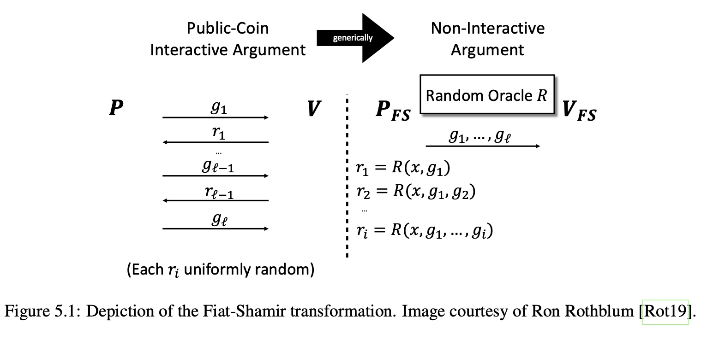

An Unnecessarily Generic Fiat-Shamir Transformation
The protocols we've taken a look so far are the Interactive Proofs. A Fiat-Shamir Transformation offers a way to turn any such protocol into a non-interactive one. That sounds extremely useful for almost all real-world scenarios and is worth looking into. But how far can the boundaries of the implementation generality be pushed? Let's find out.
Let's have a look at the diagram of the Transformation from The Book:

Recall what happens in an Interactive Protocol is the message exchange between the Prover and the Verifier where $\mathcal{P}$ sends some messages to $\mathcal{V}$ and $\mathcal{V}$ replies with random challenges $r_i$. Also there is an asymmetry to this exchange: $\mathcal{P}$ sends one message more than $\mathcal{V}$.
The idea behind the Fiat-Shamir Transformation is that one can "pre-generate" all the random $r_i$ numbers using the hashing of the $\mathcal{P}$'s claims and that these numbers are considered secure enough. By using this sort of hashing $\mathcal{P}$ and $\mathcal{V}$ arrive at the same numbers in the non-interactive manner.
But what exactly do we need to hash?
The Books mentions a number of vulnerable implementations of the Fiat-Shamir transformations that happened mainly due to the fact that now all important information was hashed leading to critical vulnerabilities.
I've asked Justin on Discord about what needs to go into the hashes each round and why and the answers are worth being saved here otherwise they will disappear in the abyss of unindexed Discord content:
GUJustin — 20:07
in GKR x would be the public input to the circuit. E.g., if P wants to prove it knows a pre-image z of a designated output y of a hash function h, then x would be the designated output y, and the circuit would take as input y and check whether h(z)=y
if the cheating prover can also choose the circuit that GKR gets applied to, then one really should include a description of the circuit in the Fiat-Shamir hash too
basically if the adversary can choose some aspect of the statement being proved at will, then you really should hash it if using Fiat-Shamir
GUJustin — 20:10
this fends off attacks of the form whereby the attacker tries just once, unsuccessfully, to generate a convincing proof of a false statement and then simply alters the unhashed aspect of the proof system to make the transcript into an accepting one
GUJustin — 20:11
if that claim is coming from the untrusted prover itself then absolutely.
montekki — 20:21
not sure I follow: my understanding is that in this setup there would be a circuit that computes h, the z would be the claimed inputs and the y would be the claimed outputs? So P starts with sending y and then the protocol goes all the way back to checking z at the last step?
GUJustin — 20:48
that all sounds right, but in a succinct argument, P wouldn't send z to the verifier explicitly. Rather, P would start the argument by cryptographically committing to a (low-degree extension polynomial of) z.
in this setting we are typically thinking of h as not determined by the adversary (e.g., h is SHA256 or some other standard hash function the adversary had no control over), but y and z are determined by the adversary
think of y and the cryptographic commitment to z as the prover's first message in the protocol
from that perspective, of course Fiat-Shamir is going to hash both y and the commitment to z
and if h (and the circuit C computing h) are outside of the control of the adversary, then we do not have to hash a description of h or C
Mocking randomness
The Interactive Verifiers need to draw random numbers from some source of randomness and send them as challenges to the Provers:
pub fn round<R: Rng>(
&mut self,
g_j: univariate::SparsePolynomial<F>,
rng: &mut R,
) -> Result<VerifierRoundResult<F>, Error> {
let r_j = F::rand(rng);For instance this is what the round of Sum-Check does, drawing
$r_j$ from some generator that implements Rng. But when
"Fiat-Shamirizing" the protocol the generator Rng is no longer
needed and the $r_j$ results from hashing have to be used.There
are many ways one could think of to do that.
For instance, one could modify the protocol to pre-generate a set of random numbers of necessary size beforehand and use $i$-th generated number at round $i$. Then, when "Fiat-Shamirizing" this code the array of randomly generated values could be substituted with the derived from hashing one.
Or one could implement the Rng trait for some type of non-random
generator that would give out predefined numbers to the user.
But for my previous implementation there exists a least-invasive
way to do this: to create a simple trait that describes generation
of a next random field element F:
pub trait RngF<F> {
fn draw(&mut self) -> F;
}And implement it for any type that implements Rng so it would stack
with existing code nicely:
impl<F: Field, T: Rng> RngF<F> for T {
fn draw(&mut self) -> F {
F::rand(self)
}
}And if we want to feed pre-generated numbers to any user of this trait we can do it with a following simple type:
pub struct RandNums<F> {
nums: Vec<F>,
current: usize,
}
impl<F: Field> RandNums<F> {
fn new(nums: Vec<F>) -> Self {
Self { nums, current: 0 }
}
}
impl<F: Copy> RngF<F> for RandNums<F> {
/// TODO: This will obviously panic when goes off bounds.
fn draw(&mut self) -> F {
let res = self.nums[self.current];
self.current += 1;
res
}
}Going generic
Great, now how can this simple transformation be implemented? By looking at the Figure above there are several things one can notice:
- There is hashing happening. Hashing is usually done to bytes.
- It is opaque to the types of $g_i$, they depend on the protocol and as such in case of Sum-Check $g_i$ may be the univariate polynomials, or in case of Schnorr protocol they may be big numbers.
- All relevant information such as $\mathcal{P}$ claims and everything has to go into the hash.
It would make sense to create a top layer of this protocol that would not know the details of the exact protocol being "Fiat-Shamirized" that would implement all manipulations and hashing with the serialized $g_i$ in form of byte vectors.
For that the exact $\mathcal{P}$ and $\mathcal{V}$ can be abstracted with the following traits:
pub trait InteractiveProver<F> {
fn g_1(&mut self) -> Result<Vec<u8>>;
fn round(&mut self, j: usize, r_j: F) -> Result<Vec<u8>>;
fn num_rounds(&self) -> usize;
}
pub trait InteractiveVerifier<F: Field, R: RngF<F>> {
fn round(&mut self, j: usize, g_j: &[u8], rng: &mut R) -> Result<bool>;
}So the idea that $\mathcal{P}$ and $\mathcal{V}$ are exchanging serialized
messages with round methods. One thing is that for the first
round of $\mathcal{P}$ a method $g_1$ is needed to reflect
the asymmetry of the protocol ($\mathcal{P}$ sends one more message then
$\mathcal{V}$ does).
And the transcript would be just $\lbrace g_1, \cdots, g_l \rbrace$ in serialized form:
pub struct FiatShamirTranscript {
g: Vec<Vec<u8>>,
}Now a Sum-Check protocol implementation can be used as an example of implementation of the above traits:
impl<F: Field, P: SumCheckPolynomial<F>> InteractiveProver<F> for sum_check_protocol::Prover<F, P> {
fn g_1(&mut self) -> Result<Vec<u8>> {
let mut res = vec![];
let p: (F, univariate::SparsePolynomial<F>) = (self.c_1(), self.round(F::one(), 0));
p.serialize_uncompressed(&mut res)?;
Ok(res)
}
fn round(&mut self, j: usize, r_j: F) -> Result<Vec<u8>> {
let mut res = vec![];
sum_check_protocol::Prover::round(self, r_j, j).serialize_uncompressed(&mut res)?;
Ok(res)
}
fn num_rounds(&self) -> usize {
self.num_vars()
}
}So here on the first step to send message $g_1$ we need to pack two things on it
- Prover's claim $C_1$
- The first univariate polynomial $\mathcal{P}$ sends to the $\mathcal{V}$
And mirroring this logic on the $\mathcal{V}$ side:
impl<F: Field, R: RngF<F>, P: SumCheckPolynomial<F>> InteractiveVerifier<F, R>
for sum_check_protocol::Verifier<F, P>
{
fn round(&mut self, j: usize, g_j: &[u8], rng: &mut R) -> Result<bool> {
if j == 0 {
let c_1: (F, univariate::SparsePolynomial<F>) =
CanonicalDeserialize::deserialize_uncompressed(g_j)?;
self.set_c_1(c_1.0);
self.round(c_1.1, rng)?;
return Ok(true);
}
let g_j: univariate::SparsePolynomial<F> =
CanonicalDeserialize::deserialize_uncompressed(g_j)?;
match self.round(g_j, rng)? {
sum_check_protocol::VerifierRoundResult::JthRound(_) => Ok(true),
sum_check_protocol::VerifierRoundResult::FinalRound(res) => Ok(res),
}
}
}In the first round we expect $g_1$ to be byte-serialized tuple $(C_1, g_1(X_1))$.
Generating and Verifying the Fiat-Shamir Transcript
Now, the random numbers $r_i$ need to be generated from the above
transcript by hashing the first $i$ of them at round $i$. Thankfully
the current tip of arkworks library contains very useful utilities
for that, namely a trait HashToField that would do exactly what we
need here. With that the implementation of verification for the
above verifier trait would look as follows:
pub fn verify_transcript<
F: Field,
V: InteractiveVerifier<F, RandNums<F>>,
H: HashToField<F>>
(
transcript: FiatShamirTranscript,
verifier: V,
) -> Result<bool> {
let mut verifier = verifier;
let hasher = H::new(&[]);
let mut hash_input = vec![];
for j in 0..transcript.g.len() {
hash_input.extend_from_slice(&transcript.g[j]);
let r_j = hasher.hash_to_field(&hash_input, 1)[0];
if !verifier.round(j, &transcript.g[j], &mut RandNums::new(vec![r_j]))? {
return Ok(false);
}
}
Ok(true)
}As you may see here the logic is pretty straightforward: each
round the context of HashToField is extended with a new
byte slice of $g_i$. Then it is used to generate the new random
$r_i$ that is fed into the InteractiveVerifier.
Testing the Transformation
To test the Transformation it is suggested to cannibalize the randomized test from the original Sum-Check implementation:
#[test]
fn it_works() {
use sha2::Sha256;
let rng = &mut test_rng();
for n in 2..10 {
let g = rand_poly::<_, Fp5>(n, 3, rng);
let prover = Prover::new(g.clone());
let verifier = Verifier::new(n, Some(g));
let transcript =
generate_transcript::<_, _, DefaultFieldHasher<Sha256>>(prover).unwrap();
assert!(
verify_transcript::<_, _, DefaultFieldHasher<Sha256>>(transcript, verifier)
.unwrap()
)
}
}Conclusion
We have experimented with generalizing the Fiat-Shamir transformation. So far the code I've seen implemented in production does not bother with such complications and instead of being generic over everything just hashes an array of concrete inputs. But experimenting with writing generic and expandable code is always fun. Probably the above approach quite generic to be used for almost any IOP one could imagine. A fun exercise for the reader would be to use this implementation to "fiat-shamirize", say, the Schnorr protocol. As usual, the implementation is available in the repo.
Reference list.
YouTube: The Fiat-Shamir Transform - Ron Rothblum
Trail of Bits: Coordinated disclosure of vulnerabilities affecting Girault, Bulletproofs, and PlonK